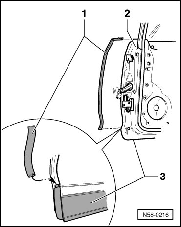
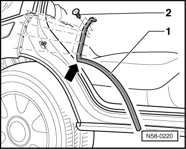

Door Gap Seals
Rear Door
Door Gap Seals
At the factory, sealant is applied to the door seals. They are they positioned on the door flange and rolled on.
• During removal of the seal, sealant is distributed on interior side of seal and the sides can be bent open easily. If the seal is being installed again, the sealing performance and proper seating are no longer guaranteed.
• For this reason, every completely removed seal must be replaced with a so-called "hammer-stroke seal".
• With partially removed seals, press the edges of the seal together before installing.
- Pull off front door gap seal - 1 - from the door edge.

- Attach door gap seal to trim strip - 3 - of door and then to door edge - 2 -.
- Pull off rear door gap seal - 1 - with clips - 2 - in area of side panel.

- Pull seal off edge in area of wheel housing.
- When installing rear door gap seal, start at corner - arrow - and then press clips onto side panel.
- Finally push door gap seal onto edge of wheel housing.